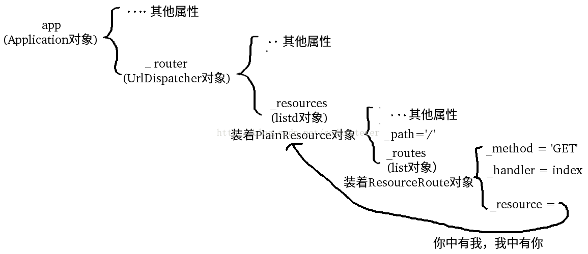

import asyncio
from aiohttp import web
#通过localhost:8080访问
async def index(request):
resp = web.Response(body=b'<h1>Index</h1>')
# 如果不添加content_type，某些严谨的浏览器会把网页当成文件下载，而不是直接显示
resp.content_type = 'text/html;charset=utf-8'
return resp
#通过localhost:8080/hello/输入一个字符串 访问
async def hello(request):
text = '<h1>hello,%s</h1>' % request.match_info['name']
resp = web.Response(body=text.encode('utf-8'))
#如果不添加content_type，某些严谨的浏览器会把网页当成文件下载，而不是直接显示
resp.content_type = 'text/html;charset=utf-8'
return resp
async def init(loop):
app = web.Application(middlewares={
logger1_factory, logger2_factory
})
app.router.add_route('GET','/',index)
app.router.add_route('GET','/hello/{name}',hello)
server = await loop.create_server(app.make_handler(),'localhost',8080)
print('accepting request.....')
return server
async def logger1_factory(app,handler):
async def logger1_handler(request):
print('i am logger1')
return await handler(request)
return logger1_handler
async def logger2_factory(app,handler):
async def logger2_handler(request):
print('i am logger2')
return await handler(request)
return logger2_handler
loop = asyncio.get_event_loop()
loop.run_until_complete(init(loop))
loop.run_forever()
- app.router是一个UrlDispatcher对象，它有一个add_route方法

- 我们在浏览器中输入 localhost:8080 浏览器会向服务器发送一个请求，method = 'GET' path = '/'
编写一个HTTP服务器，分别处理以下URL：
- / - 首页返回b'<h1>Index</h1>'；
- /hello/{name} - 根据URL参数返回文本hello, %s!。
代码如下：
import asyncio
from aiohttp import web
async def index(request):
await asyncio.sleep(0.5)
return web.Response(body=b'<h1>Index</h1>')
async def hello(request):
await asyncio.sleep(0.5)
text = '<h1>hello, %s!</h1>' % request.match_info['name']
return web.Response(body=text.encode('utf-8'))
async def init(loop):
app = web.Application(loop=loop)
app.router.add_route('GET', '/', index)
app.router.add_route('GET', '/hello/{name}', hello)
srv = await loop.create_server(app.make_handler(), '127.0.0.1', 8000)
return srv
loop = asyncio.get_event_loop()
loop.run_until_complete(init(loop))
loop.run_forever()
Client
client example:
import aiohttpimport asyncioimport async_timeout
async def fetch(session, url):
with async_timeout.timeout(10):
async with session.get(url) as response:
return await response.text()
async def main():
async with aiohttp.ClientSession() as session:
print(html)
loop = asyncio.get_event_loop()
loop.run_until_complete(main())